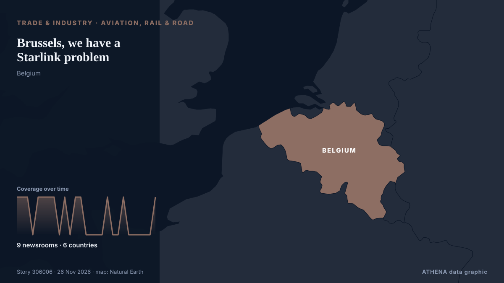

Εμπόριο, Βιομηχανία & Υποδομές
ΧορηγούμενοΠαρουσιάζεται από  Cybernetics and Artificial Intelligence Lab Welcome to the Cybernetics and Artificial Intelligence Laboratory, established at the Department of Business Administration of the National and Kapodistrian University of Athens. The lab is headed by Professor Dimitrios Thomakos. The lab aims to do research that can be published in top venues. Our research uses tools and methods of Artificial Intelligence, and lies in the following areas: - Forecasting - Decision making - Cyber security - Finance We are always looking forward to collaborating with exceptional students!
Cybernetics and Artificial Intelligence Lab Welcome to the Cybernetics and Artificial Intelligence Laboratory, established at the Department of Business Administration of the National and Kapodistrian University of Athens. The lab is headed by Professor Dimitrios Thomakos. The lab aims to do research that can be published in top venues. Our research uses tools and methods of Artificial Intelligence, and lies in the following areas: - Forecasting - Decision making - Cyber security - Finance We are always looking forward to collaborating with exceptional students!
Οι τίτλοι των ειδήσεων παρουσιάζονται στα αγγλικά, όπως δημοσιεύτηκαν.

Αερομεταφορές, σιδηρόδρομος & οδικέςBrussels, we have a Starlink problem
Αναφέρθηκε από 9 μέσα σε 6 χώρες από τις 22 Νοε. Πρώτη αναφορά από Ports Europe. Το ATHENA εκτιμά τον κίνδυνο σε 1.7/10 (χαμηλός), με βεβαιότητα 81%.
| 13 Νοε | 85 |
|---|---|
| 14 Νοε | 77 |
| 15 Νοε | 66 |
| 16 Νοε | 122 |
| 17 Νοε | 96 |
| 18 Νοε | 102 |
| 19 Νοε | 73 |
| 20 Νοε | 99 |
| 21 Νοε | 34 |
| 22 Νοε | 60 |
| 23 Νοε | 106 |
| 24 Νοε | 76 |
| 25 Νοε | 65 |
| 26 Νοε | 7 |
Malaysia benefits immensely as a trading nation by engaging with world leaders, says Anwar
KUALA LUMPUR, Nov 25 — Prime Minister Datuk Seri Anwar Ibrahim said Malaysia has benefited immensely as a trading nation... από Malay Mail
US unveils proposed tariffs on major partners, including EU and China
It is Donald Trump's latest move to remake Washington's trade relationships. από Euractiv
'No structural excess capacity in any sector': India pushes back against US tariff allegations
India said on Wednesday that it remained committed to concluding a bilateral trade agreement with the US at the earliest. από Business Today India
Oil tanker catches fire after hitting naval mine in Strait of Hormuz: Iranian Navy
An oil tanker caught fire and was left immobilized Wednesday after striking a naval mine in a restricted area east of the Strait of Hormuz, the Iranian Navy said, Anadolu reports. από Middle East Monitor
US proposes new tariffs on 14 trading partners, including China and the EU
The US proposed new tariffs on 14 trading partners on Wednesday. από The Next Web
APM Terminals Maasvlakte II and Port of Rotterdam Authority take next step in terminal development
APM Terminals Maasvlakte II and the Port of Rotterdam Authority are moving forward in terminal’s development with preparations for a. από Cyprus Shipping News
EU adds 15 Russian entities to export restriction list
The European Union added 15 Russian entities to its list of organizations "subject to tighter export restrictions on dual-use goods and advanced technologies," the Council of the EU announced on… από AzerNews
Maersk Orders 12 Ultra-Large Dual-Fuel Container Ships
Maersk has ordered 12 ultra-large container ships scheduled for delivery in 2030 and 2031, which will become the biggest vessels in its fleet, a company spokesperson said on Tuesday.The vessels, each… από MarineLink
In Lebanon, the opening of a second airport reflects political shifts
Kleiat Airport, located on the Mediterranean coast, about 20km from the border crossing to Syria, will offer another gateway to Lebanon. από The Straits Times
IRGC Reports Three Tankers Exploded in Hormuz After Hitting Mines
Iran's Revolutionary Guards navy reported that three tankers exploded and caught fire in the Strait of Hormuz after striking naval mines ... από IranWire
Iran says it is not concerned about US naval blockade
Dubai: Iran is not concerned about the US naval blockade as cargo clearance through its non-southern borders has increased and reserves of strategic goods remain strong, First Vice President Mohammad… από Deccan Herald
Explosion occurs on LNG carrier in Strait of Hormuz
Ahmad Hayat-Moghaddam, Vice Chairman of the Iranian Parliament’s National Security and Foreign Policy Committee, announced on Tuesday, N ... από IranWire
EU officially limits imports of Chinese hybrid vehicles
Brussels and Beijing agreed to limit exports of Chinese plug-in hybrids and other hybrid vehicles to the 27-nation bloc as part of a deal to avoid a trade war. από Free Malaysia Today
Tata Steel shares rise 1%, APL Apollo falls 9% as brokerages turn cautious on ₹28,000 cr deal
Brokerages largely negative on APL Apollo, mixed on Tata Steel. από The Hindu BusinessLine
Nguyen Hue Pedestrian Street lights up with 3D mapping show on Vietnam Culture Day
A spectacular 3D mapping show lit up the facade of Rex Hotel Saigon on Nguyen Hue Pedestrian Street on Tuesday night as part of Ho Chi Minh City's Vietnam Culture Day celebrations. από Tuoi Tre News
Hormuz crisis drives global energy supply shock
Disruptions to shipping through the Strait of Hormuz have triggered the world's largest energy supply shock, prompting Gulf producers to consider billions of… από Daily Tribune
Hagia Sophia's Hidden Tunnels Uncovered
Restoration work in Istanbul has uncovered 420 meters of underground passages, ancient water infrastructure and architectural remains that may predate the sixth-century monument. από to vima
Ansarallah unveils massive Mokha depots packed with Saudi and Balkan munitions
Footage released on November 22 by Yemen’s Ansarallah shows warehouses and metal containers packed with munitions and gear seized from Saudi-affiliated mobilization camps in Mokha during Operation… από Tehran Times
Uzbekistan and Jordan to expand pharmaceutical cooperation
Uzbekistan and Jordan have agreed to expand cooperation on pharmaceutical regulation, drug safety and specialist training, with a joint roadmap planned. από UzDaily
Russia to supply Afghanistan with $200 mln worth of goods
Head of the Business Council for Cooperation with Afghanistan under the Russian Chamber of Commerce and Industry Dmitry Antonov emphasized that agreements were reached during the Russian-Afghan… από TASS (English)
China Southern Airlines unit to buy 50 Boeing 737-8 planes
The agreement marks the US planemaker's first major order from China in almost a decade. από Al Jazeera English
4th Abu Dhabi Maritime Awards honours winners
Under the patronage of His Highness Sheikh Hamdan bin Zayed Al Nahyan, Ruler’s Representative in the Al Dhafra Region; in. από Cyprus Shipping News
Flights delayed at Chicago O’Hare airport as ground radar system suffers outage
Chicago’s O'Hare International Airport faced a brief ground stop due to staffing challenges at TRACON, which spanned from 10:40 am to 12:15 pm, coinciding with the Thanksgiving travel rush. από Times of India
Thailand vehicle production hits 6-year low after flooding
BANGKOK: Thailand’s car production in October fell 35.19% from a year earlier, compared with a 6.08% decline in September, the Federation of Thai Industries said on Tuesday. από Business Recorder
Singapore Shipping orders PCTC pair from Guangzhou Shipyard International
First partnership to deliver LNG dual-fuel car carriers for the owner’s long-term fleet renewal and low-carbon shipping road map. από Seatrade Maritime
DR Congo halts cobalt exports again amid drop in prices
The Democratic Republic of Congo will again suspend cobalt exports starting at the end of the month in an attempt to boost prices. από Africanews (English)
Le Pen Condemns Turkey Over Libya Maritime Deal, Cites UNCLOS
French far-right politician backs Egypt's position in eastern Mediterranean dispute; Greece's considers agreement as baseless and illegal. από to vima
Belgium inaugurates Europe’s largest satellite factory
Belgium’s King Philippe on Tuesday, Nov. από Kyiv Post
Saddam Hussein's Boeing 747 could be yours for $900,000
An Iraqi government plane used by former dictator Saddam Hussein has been put up for auction with an estimated value of $900,000. από The National
Disruptions to regional trains, buses, trams on 2nd day of public transport strike
Public transport users can again expect disruptions to regional trains, buses, and trams today. από NL Times
At least 36 trains robbed; 14 accused in $22.5 million Nike cargo theft racket in US
Fourteen people have been indicted in the US for allegedly stealing over $22.5 million worth of cargo from at least 36 freight trains in Southern California. από Times of India (World)
Israel approves flydubai’s return to Tel Aviv pending security clearance
The decision was made after a visit to the UAE by the Israeli Transportation Ministry director-general. από The Straits Times
Russian Government Earmarks $576Mln to Build Rail Ferries Supplying Kaliningrad Region
The exclave has grown increasingly reliant on sea freight cargo after Lithuania restricted the movement of some goods through its territory. από The Moscow Times
Indonesia Factory Fire Kills 26 as Rescuers Search for Missing Workers
At least 26 people have died and eight others remain missing after a fire tore through a confectionery factory in Indonesia’s Banten province, as authorities investigate the cause and possible… από Khaama Press